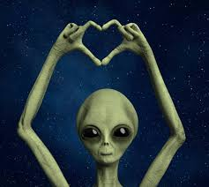

Space Invaders is a 1978 arcade shooting game developed by the Japanese company Taito. It became a cultural phenomenon and one of the earliest games that created massive global hype. The player controls a laser cannon, moving horizontally across the bottom of the screen while shooting descending aliens before they reach the ground
According to developers, the original idea was inspried by a mix of Star Wars , War of the Worlds, and traditiona; shooting ranges. Interestingly, the game was supposed to feature tanks and soldiers , but technical limitations forced Taito to use simple alien shapes instead.
The alien formation moves left-to-right, gradually accelerating as more invaders are eliminated. Once they hit the screen boundary, they descend one level and change direction. The tension increases as the sound effects speed up, creating a sense of panic deliberately engineered by the developes.
Space Invaders features a structured alien army arranged in rows. Although simple, each type behaves differently and grants different points :
On level 256, a strange phenomenon occurs—similar to the Pac-Man glitch. A memory counter used by the game overflows, causing corrupted graphics to appear on the screen. Players refer to this as the "Vertical Memory Collapse"

The cause is simple: the game uses an 8-bit integer to store the current level number. When the counter reaches 256, it overflows back to zero. The graphics routine, thinking it is level 0, draws alien sprites in incorrect memory regions, causing screen distortion.
“We didn't expect players to reach that far. The glitch became part of gaming history.” — Nishikado Tomohiro, Creator of Space Invaders
Space Invaders is considered one of the most influential video games ever created. It increased arcade machine sales dramatically and helped establish gaming as a mainstream entertainment medium. Its mechanic of enemies speeding up as they decrease in number became a foundational concept in game design.
Over the years, Space Invaders has been remade, enhanced, and re-released in numerous compilations. Some of the most notable collections are listed below:
| Collection Title | Release Date | Included Games |
|---|---|---|
| Space Invaders Anniversary | 2003 |
|
| Taito Legends | 2005 |
|
| Space Invaders Invincible Collection | Nintendo Switch: 2020 |
|
Space Invaders is frequently referenced in pop culture. The alien sprite is considered a universal symbol of retro gaming. It appears in movies, music videos, street art, and even fashion. The French artist Invader uses mosaic tiles to place Space Invaders sprites across major cities.
Today, the game continues to inspire developers, serving as an iconic example of how simple mechanics can create deep, engaging gameplay.